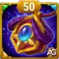

O que acontece quando uma poderosa feiticeira transforma magia de maldição em uma arma de destruição em massa? Iris, a ousada feiticeira da facção Eternidade, está de volta com uma reformulação devastadora que muda tudo. Sua Relíquia Lendária desbloqueia novas profundezas da escuridão: prolonga debuffs, multiplica acúmulos de queimadura e sela o destino dos inimigos de forma tão completa que nem mesmo uma ressurreição pode salvá-los.
Se você quer dominar o PvP com a mecânica de execução de Queima da Alma ou destruir equipes da Hydra com os acúmulos implacáveis de Fogo Interior, este guia completo cobre tudo: fórmulas das habilidades, comparação de talismãs, melhores sinergias e prioridade de artefatos. Se você sempre quis que Dante, Octavia e Tempus funcionassem como uma unidade de verdade, Iris é a peça que faltava.
Guia da Iris - Hero Wars Alliance, um jogo desenvolvido pela Nexters.
Iris é uma feiticeira ousada que usa seu poder para enfraquecer inimigos e fortalecer maldições aplicadas pelos aliados. Como maga da facção Eternidade, ela se destaca em equipes que dependem de acúmulo de debuffs e dano mágico explosivo. Sua reformulação introduziu habilidades de Relíquia Lendária que aumentam drasticamente o tempo de duração das maldições, a produção de dano e sua presença geral tanto no PvP quanto nas batalhas contra a Hydra.
Classe principal: Maga
Posição: Linha do meio
Atributo principal: Inteligência
Facção: Eternidade
Como obter Pedras da Alma: Loja da Grande Arena, Baú Heroico, Eventos
A reformulação da Iris foca em refinar suas mecânicas de maldição e aumentar seu potencial mágico bruto. Suas Habilidades de Relíquia Lendária ampliam de forma significativa o impacto dos debuffs, transformando-a em um pesadelo para tanques e curandeiros inimigos.
Com suas novas habilidades, Iris não apenas fortalece a facção Eternidade, como também remodela composições centradas em dano mágico explosivo. Se você gosta de jogabilidade tática e de controlar o ritmo da batalha, a versão reformulada da Iris é uma heroína empolgante de dominar.
Nota geral da Iris no meta
Esta avaliação rápida resume como Iris se sai no meta atual de Hero Wars Alliance com base em valor de controle, pressão de dano, sinergia com a equipe e o quanto ela depende de aliados para brilhar.
Controle de Grupo (CC): ⭐⭐⭐
Produção de dano: ⭐⭐⭐⭐⭐
Sinergia de equipe: ⭐⭐⭐⭐
Autossuficiência: ⭐⭐⭐
Iris entrega dano mágico explosivo no nível máximo por meio de sua mecânica de execução de Queima da Alma e do DoT contínuo de Fogo Interior. Sua sinergia com a equipe é excelente: cada debuff aplicado por um aliado se torna uma fonte de dano adicional para ela. A nota de CC reflete Criatura de Outro Mundo e Agonia da Alma, que reduzem as defesas inimigas e bloqueiam o uso de habilidades. Sua autossuficiência é razoável graças à imunidade a debuffs de Pacto Misterioso, mas ela continua frágil e precisa de proteção na linha de frente para render no máximo.
Prós & Contras da Iris — Hero Wars Alliance
✅ Prós
Poder de execução: Queima da Alma mata inimigos com pouca vida e impede ressurreição, sendo um contra-ataque duro contra Kayla e Aidan.
Imunidade a debuffs: Pacto Misterioso torna Iris completamente imune a todos os debuffs inimigos, mantendo-a confiável em qualquer composição.
Explosão massiva: Queima da Alma escala totalmente com Ataque Mágico e cargas de Alma Pura, entregando um dos maiores danos em um único lançamento do jogo.
Sinergia de DoT: Fogo Interior acumula até 10 cargas no nível 20 da Relíquia, recompensando equipes que aplicam debuffs constantemente.
Dano composto de DoT: Cada carga de Fogo Interior causa dano mágico independente ao longo do tempo; com os acúmulos no máximo, o dano total do DoT rivaliza com uma segunda ultimate, inclinando fortemente lutas longas a favor da Iris.
Talismã flexível: o Talismã da Erudição aumenta o burst; o Talismã da Coletora melhora a defesa. Ambos são válidos dependendo do meta.
❌ Contras
Posicionamento frágil: atuar na linha do meio a expõe a habilidades em área e assassinos como Yasmine.
Dependente de energia: Queima da Alma exige carga de energia; desativar sua fonte de energia neutraliza seu principal dano.
Dependente do time: precisa de debuffs dos aliados para acumular cargas de Alma Pura e Fogo Interior; perde grande parte do poder sem suporte adequado.
Tempo de aceleração do DoT: Fogo Interior precisa de vários gatilhos de debuff para alcançar o máximo de cargas; em lutas rápidas de burst ou contra CC pesado, ela pode nunca atingir todo o potencial do DoT.
Counter: Phobos e Tempus inimigo podem travá-la ou congelá-la antes que ela consiga agir.
Iris — Comparação dos status máximos dos talismãs
Iris — Comparação de status dos talismãs
Status
Talismã 1 Coletora
Talismã 2 Erudição
Inteligência
17,977
15,977
Agilidade
3,643
3,643
Força
3,498
3,498
Vida
862,768
862,768
Ataque Físico
37,366
35,366
Ataque Mágico
209,881
203,881
Armadura
22,828.5
36,628.5
Defesa Mágica
62,993.8
38,223.8
Tenacidade
930
930
Penetração Mágica
17,089
36,889
Chance de Acerto Crítico Mágico
4,404
4,404
Esmagamento
10,221
10,221
Guia de talismãs da Iris em Hero Wars Alliance
Iris possui dois talismãs, mas apenas o equipado concede seu bônus na batalha. Escolher o talismã certo pode fazer grande diferença dependendo da composição do seu time e da equipe inimiga. Os três slots de reroll contam como um único bônus total, então o valor combinado deles define o impacto real do talismã.
Talismã da Coletora
Talismã da Coletora, Hero Wars Alliance.
Este talismã concede Defesa Mágica e Inteligência extras, tornando-o útil em composições defensivas ou contra equipes inimigas focadas em magia. Ele melhora a sobrevivência da Iris, permitindo que ela dure mais em lutas prolongadas, embora ofereça menos poder ofensivo em comparação com a alternativa.
Slot do atributo principal:
- Inteligência +2,000
Ataque Mágico proveniente da Inteligência: +6,000
Defesa Mágica proveniente da Inteligência: +2,000
Ataque Físico proveniente da Inteligência: +2,000
Slots de reroll (bônus combinado):
Defesa Mágica +6,600 × 3 = +19,800 de Defesa Mágica total
Tabela: Talismã da Coletora da Iris

Talismã 1: Coletora
Atributo principal total
Inteligência
+2,000
Slot 1
Slot 2
Slot 3
Bônus total de reroll
Defesa Mágica +6,600
Defesa Mágica +6,600
Defesa Mágica +6,600
Defesa Mágica +19,800
Talismã da Erudição
Este talismã é focado em ofensiva, aumentando Armadura e Penetração Mágica. Ele é especialmente eficaz quando Iris enfrenta inimigos com alta defesa mágica ou atacantes físicos. O bônus de penetração amplifica todas as suas habilidades, tornando seu dano muito mais forte, principalmente quando combinado com sua ultimate aprimorada pela Relíquia.
Slot do atributo principal:
Armadura +12,000
Slots de reroll (bônus combinado):
Penetração Mágica +6,600 × 3 = +19,800 de Penetração Mágica total
Talismã da Erudição, Hero Wars Alliance.
Tabela: Talismã da Erudição da Iris
Talismã 2: Erudição
Atributo principal total
Armadura
+12,000
Slot 1
Slot 2
Slot 3
Bônus total de reroll
Penetração Mágica +6,600
Penetração Mágica +6,600
Penetração Mágica +6,600
Penetração Mágica +19,800
Qual talismã é o melhor para Iris?
Entre os dois talismãs, o Talismã da Erudição é a melhor escolha para a maioria das batalhas. Sua alta Penetração Mágica aumenta muito o burst da Iris, especialmente contra equipes com forte defesa mágica. O bônus de Armadura também adiciona uma pequena camada de proteção contra times físicos. Já o Talismã da Coletora é mais defensivo e deve ser reservado para enfrentar composições pesadas de magia ou estratégias focadas em sobrevivência.
Prioridade de evolução das habilidades de Relíquia Lendária da Iris - Hero Wars Alliance
Quer saber quais habilidades da Iris realmente importam? Cada desbloqueio de Relíquia muda a forma como ela luta. Este guia destrincha cada habilidade em linguagem clara para que você saiba exatamente onde investir seus preciosos Fragmentos de Relíquia.
Observação: as fórmulas das habilidades são exibidas para o Talismã da Coletora e para o Talismã da Erudição no nível máximo.
1ª – Queima da Alma
Descrição no jogo: Iris ganha cargas de Alma Pura para cada aliado com buff e inimigo com debuff. Quanto mais cargas ela tiver, maior será seu dano. Inimigos com pouca Vida morrem com a habilidade. Heróis mortos por esta habilidade não podem ser ressuscitados.
Explicação da habilidade: Queima da Alma é a ultimate da Iris e também sua arma mais devastadora. Pense nas cargas de Alma Pura como "combustível": cada aliado com buff e cada inimigo com debuff concede uma carga para a Iris antes de ela disparar. Quanto mais cargas ela acumula, mais explosiva é a explosão. Qualquer inimigo cuja vida caia abaixo do limiar de execução é eliminado instantaneamente e não pode voltar à vida, sendo um contra-ataque duro contra heróis como Kayla e Aidan, que dependem de ressurreição. O dano base escala totalmente com Ataque Mágico em (40% do Ataque Mágico + 12,000), além de um adicional de (5% do Ataque Mágico + 600) por carga de Alma Pura, fazendo com que uma ultimate totalmente carregada seja capaz de varrer múltiplos inimigos em um único lançamento.
Fórmula com o Talismã 1: Coletora
Dano base:95,952 (40% do Ataque Mágico + 12,000)
Dano por carga de Alma Pura:11,094 (5% do Ataque Mágico + 600)
Limiar de vida para execução:95,952 (40% do Ataque Mágico + 12,000)
Fórmula com o Talismã 2: Erudição
Dano base:93,552 (40% do Ataque Mágico + 12,000)
Dano por carga de Alma Pura:10,794 (5% do Ataque Mágico + 600)
Limiar de vida para execução:93,552 (40% do Ataque Mágico + 12,000)
Informações da animação da habilidade
Palavras-chave: Execução, Dano Mágico
Atraso da animação: 0.88 segundos
Habilidade Queima da Alma, Hero Wars Alliance.
Prioridade de evolução:Muito Alta – A habilidade definidora da Iris. A mecânica de execução combinada com a escalada por cargas de Alma Pura faz dela o núcleo da rotação de dano. Sempre priorize esta habilidade acima de todas as outras.
2ª – Criatura de Outro Mundo
Descrição no jogo: Bitey, o familiar da Iris, enfraquece os inimigos e reduz sua Defesa Mágica por 5.0 segundos. Também prolonga todos os debuffs no alvo por 5.0 segundos, tanto os já ativos quanto os aplicados durante a duração da habilidade.
Explicação da habilidade: Bitey não é apenas um companheiro fofo, ele é um amplificador de dano para toda a equipe. Cada ativação reduz a Defesa Mágica inimiga em (20% do Ataque Mágico + 25 × Nível), fazendo com que os alvos recebam mais dano de todas as habilidades mágicas, incluindo os ticks de Fogo Interior. Além disso, todo debuff já ativo no alvo é prolongado automaticamente por 5 segundos: os acúmulos de Fogo Interior, as maldições espectrais do Dante e as marcas do Corvus passam a durar mais sem nenhum esforço extra. Esse efeito duplo, redução de defesa somada à extensão de debuffs, transforma Bitey em um multiplicador de força a cada 10 segundos.
Fórmula com o Talismã 1: Coletora
Redução de Defesa Mágica:44,976 (20% do Ataque Mágico + 25 × Nível)
Fórmula com o Talismã 2: Erudição
Redução de Defesa Mágica:43,776 (20% do Ataque Mágico + 25 × Nível)
Informações da animação da habilidade
Recarga inicial: 1 segundo
Recarga: 10 segundos
Palavras-chave: Debuff
Atraso da animação: 1 segundo
Duração: 5 segundos
Habilidade Criatura de Outro Mundo, Hero Wars Alliance.
Prioridade de evolução:Alta – Reduz a Defesa Mágica inimiga e prolonga todos os debuffs a cada 10 segundos, aumentando o dano mágico de toda a equipe. Evolua esta habilidade logo após Queima da Alma.
2ª – Criatura de Outro Mundo (Aprimorada) Relíquia Lendária: Nível 10
Descrição no jogo: Bitey agora reduz a Defesa Mágica por 7.0 segundos, em vez de 5.0. Também prolonga todos os debuffs no alvo por 5.0 segundos.
Explicação da habilidade: Trata-se de uma melhoria focada: a janela de redução de Defesa Mágica do Bitey cresce de 5 para 7 segundos. Dois segundos extras podem parecer pouco, mas em um combate rápido isso significa que cada aliado ganha mais tempo para causar dano mágico aumentado nessa janela. A extensão de debuff permanece em 5 segundos. Esta evolução não muda o funcionamento da habilidade, apenas faz com que ela dure mais, o que é sempre benéfico tanto no PvP quanto nas lutas contra a Hydra.
Informações da animação da habilidade
Palavras-chave: Debuff
Duração: 7 segundos (aumentada de 5)
Informações do desbloqueio da Relíquia no nível 10
Tabela: Desbloqueio da Relíquia no nível 10
Informação
Valor
Fragmentos de Relíquia necessários (níveis 2–10)
280
Total de Fragmentos de Relíquia necessários (níveis 0–10)
330
Bônus total de Ataque Mágico (níveis 0–10)
+11000
Bônus total de Vida (níveis 0–10)
+56149
Criatura de Outro Mundo Lendária, Hero Wars Alliance.
Prioridade de evolução:Alta – Estende a janela de redução de Defesa Mágica em 2 segundos, dando à sua equipe mais tempo para causar dano mágico aumentado. Vale cada Fragmento de Relíquia investido.
3ª – Pacto Misterioso
Descrição no jogo: Iris se torna permanentemente imune a debuffs. Quando um inimigo enfraquece um aliado ou aplica uma marca nele, ela reduz o Ataque Físico e o Ataque Mágico do inimigo por 7.0 segundos. Isso não pode ser ativado no mesmo alvo com frequência maior do que uma vez a cada 0.5 segundos.
Explicação da habilidade: Esta passiva é ao mesmo tempo um escudo e uma punição. Iris simplesmente não pode receber debuffs, nunca. Qualquer tentativa de silenciá-la, desacelerá-la ou enfraquecê-la é bloqueada imediatamente. Mas aqui está o detalhe: se o inimigo tentar aplicar debuff ou marca em qualquer um de seus aliados, Iris o pune reduzindo instantaneamente seu Ataque Físico e seu Ataque Mágico em (10% do Ataque Mágico + 40 × Nível) por 7 segundos. Quanto mais agressivo o inimigo for com debuffs, mais fraco ele fica. Isso faz com que composições pesadas de debuff do meta joguem contra si mesmas.
Fórmula com o Talismã 1: Coletora
Redução de Ataque Físico:24,988 (10% do Ataque Mágico + 40 × Nível)
Redução de Ataque Mágico:24,988 (10% do Ataque Mágico + 40 × Nível)
Fórmula com o Talismã 2: Erudição
Redução de Ataque Físico:24,388 (10% do Ataque Mágico + 40 × Nível)
Redução de Ataque Mágico:24,388 (10% do Ataque Mágico + 40 × Nível)
Informações da animação da habilidade
Palavras-chave: Debuff
Duração: 7 segundos
Recarga de ativação: 0.5 segundos por alvo
Habilidade Pacto Misterioso, Hero Wars Alliance.
Prioridade de evolução:Média-Alta – Só a imunidade a debuffs já torna esta habilidade valiosíssima no meta atual. Priorize após Queima da Alma e Criatura de Outro Mundo; a redução de ataque adiciona proteção relevante para a equipe contra composições pesadas de debuff.
4ª – Fogo Interior
Descrição no jogo: Sempre que um debuff é aplicado a um inimigo, Iris o incendeia com uma carga de Fogo Interior que causa dano por segundo enquanto o debuff estiver ativo. Se o efeito for aplicado por um Herói da Eternidade, o dano da carga dobra. Um alvo não pode ter mais de 5 cargas de Fogo Interior ao mesmo tempo.
Explicação da habilidade: Fogo Interior transforma cada debuff no campo de batalha em uma fonte constante de dano. Toda vez que qualquer aliado aplica um debuff a um inimigo, esse inimigo recebe uma carga de Fogo Interior que causa (5% do Ataque Mágico + 20 × Nível) de dano mágico por segundo. Acumule até 5 cargas e você terá um fluxo contínuo de dano mágico correndo ao lado do burst da Iris, sem que ela precise fazer nada extra. Se o debuff vier de um Herói da Eternidade (Dante, Octavia, Tempus, Corvus), o dano daquela carga dobra para (10% do Ataque Mágico + 4,800) por segundo. Em uma equipe totalmente da Eternidade, esse DoT passivo se torna enorme em lutas prolongadas.
Fórmula com o Talismã 1: Coletora
Dano por segundo por carga:12,094 (5% do Ataque Mágico + 20 × Nível)
Dano dobrado por debuff de Herói da Eternidade:25,788 (10% do Ataque Mágico + 4,800)
Máximo de cargas: 5
Fórmula com o Talismã 2: Erudição
Dano por segundo por carga:11,794 (5% do Ataque Mágico + 20 × Nível)
Dano dobrado por debuff de Herói da Eternidade:25,188 (10% do Ataque Mágico + 4,800)
Máximo de cargas: 5
Informações da animação da habilidade
Palavras-chave: Dano Mágico, Dano ao longo do tempo
Recarga: 13 segundos
Atraso da animação: 0.88 segundos
Habilidade Fogo Interior, Hero Wars Alliance.
Prioridade de evolução:Média – Adiciona DoT sustentado que se acumula em lutas longas e recompensa composições pesadas da Eternidade. Tem menos impacto em batalhas curtas de burst, nas quais as cargas nunca chegam ao máximo.
4ª – Fogo Interior (Aprimorado) Relíquia Lendária: Nível 20
Descrição no jogo: O limite de cargas de Fogo Interior agora é aumentado para 10. Se o efeito for aplicado por um Herói da Eternidade, seu dano dobra.
Explicação da habilidade: Esta evolução faz uma única coisa: dobra o número máximo de acúmulos de Fogo Interior de 5 para 10. Isso significa o dobro de ticks de queimadura simultâneos em cada inimigo com debuff. Em lutas longas ou batalhas contra a Hydra, em que os debuffs continuam sendo renovados, chegar a 10 cargas significa que Iris está gerando uma segunda fonte de dano mágico inteiramente vinda de sua passiva, além da própria ultimate. A fórmula de dano por carga passa a ser (5% do Ataque Mágico + 800) por segundo e, com debuffs de Heróis da Eternidade aplicando cargas com dano dobrado, o DPS sustentado total sobe drasticamente.
Fórmula com o Talismã 1: Coletora
Dano por segundo por carga:11,294 (5% do Ataque Mágico + 800)
Máximo de cargas: 10
Fórmula com o Talismã 2: Erudição
Dano por segundo por carga:10,994 (5% do Ataque Mágico + 800)
Máximo de cargas: 10
Informações do desbloqueio da Relíquia no nível 20
Tabela: Desbloqueio da Relíquia no nível 20
Informação
Valor
Fragmentos de Relíquia necessários (níveis 11–20)
800
Total de Fragmentos de Relíquia necessários (níveis 0–20)
1130
Bônus total de Ataque Mágico (níveis 0–20)
+29350
Bônus total de Vida (níveis 0–20)
+149734
Fogo Interior Lendário, Hero Wars Alliance.
Prioridade de evolução:Média – Dobra o limite de acúmulos de queimadura para 10, tornando Fogo Interior uma ameaça séria de dano sustentado em lutas longas. O valor escala diretamente com quantos heróis da Eternidade sua equipe utiliza.
5ª – Agonia da Alma (Nova Habilidade) Relíquia Lendária: Nível 1
Descrição no jogo: Iris enfraquece o inimigo mais próximo a cada 19 segundos e o impede de usar sua primeira habilidade.
Explicação da habilidade: Agonia da Alma é controle automático. Iris interrompe passivamente a primeira habilidade do inimigo mais próximo a cada 19 segundos sem que você precise fazer nada. Essa habilidade bloqueada pode ser a ressurreição de um curandeiro, o escudo de um tanque ou a explosão de um mago, tudo impedido no momento certo. A limitação é o intervalo fixo de 19 segundos e o fato de sempre mirar o inimigo mais próximo, então o alvo nem sempre é previsível. Ainda assim, o controle que ela oferece no PvP, ao bloquear aquela habilidade crucial em um momento de virada, torna essa uma passiva útil de se ter desbloqueada.
Informações da animação da habilidade
Palavras-chave: Debuff, Controle
Intervalo de ativação: 19 segundos
Informações do desbloqueio da Relíquia no nível 1
Tabela: Desbloqueio da Relíquia no nível 1
Informação
Valor
Fragmentos de Relíquia necessários (níveis 0–1)
50
Total de Fragmentos de Relíquia necessários (níveis 0–1)
50
Bônus total de Ataque Mágico (níveis 0–1)
+5,645
Bônus total de Vida (níveis 0–1)
+28,794
Agonia da Alma Lendária, Hero Wars Alliance.
Prioridade de evolução:Média – A interrupção passiva de habilidade é poderosa em situações específicas; o principal valor aqui vem dos bônus de status da Relíquia desbloqueados, Ataque Mágico e Vida. Desbloqueie esta habilidade para chegar ao nível 20.
6ª – Maldição da Fraqueza (Nova Habilidade) Relíquia Lendária: Nível 30
Descrição no jogo: A habilidade Queima da Alma da Iris e seus ataques básicos prolongam todos os debuffs no alvo por 3.0 segundos.
Explicação da habilidade: Sempre que Iris usa Queima da Alma ou acerta um ataque básico, todo debuff ativo no alvo é prolongado automaticamente por 3 segundos. Em teoria, isso cria um ciclo de reforço próprio: os acúmulos de Fogo Interior duram mais, a redução de defesa de Criatura de Outro Mundo permanece por mais tempo e as maldições espectrais do Dante continuam queimando. Na prática, essa extensão de 3 segundos é um efeito passivo utilitário que não mata inimigos diretamente nem gera dano explosivo. Seu valor cresce quanto mais debuffs sua equipe tiver ativos ao mesmo tempo; em uma equipe completa da Eternidade com Corvus e Dante, essas extensões realmente se acumulam com o tempo.
Informações da animação da habilidade
Palavras-chave: Passiva
Extensão de debuff por ativação: 3 segundos
Ativação: habilidade Queima da Alma e ataques básicos
Informações do desbloqueio da Relíquia no nível 30
Tabela: Desbloqueio da Relíquia no nível 30
Informação
Valor
Fragmentos de Relíquia necessários (níveis 21–30)
1750
Total de Fragmentos de Relíquia necessários (níveis 0–30)
2880
Bônus total de Ataque Mágico (níveis 0–30)
+57570
Bônus total de Vida (níveis 0–30)
+293704
Maldição da Fraqueza Lendária, Hero Wars Alliance.
Prioridade de evolução:Baixa – É uma utilidade interessante para manter debuffs ativos por mais tempo em equipes completas da Eternidade, mas o impacto direto no combate é mínimo. Invista aqui por último, depois que todas as outras habilidades estiverem maximizadas.
Tabela de Buffs, Debuffs e Marcas da Iris
A tabela abaixo detalha quais personagens possuem buffs, debuffs ou marcas que interagem com as habilidades da Iris:
Tabela de Buffs, Debuffs e Marcas
Personagem
Debuff
Buff
Marcas
Astrid
x
x
Corvus
x
x
Cornelius
x
x
Dante
x
x
DarkStar
x
x
Dorian
x
Elmir
x
Faceless
x
Fafnir
x
Iris
x
Isaac
x
Jet
x
x
Jhu
x
Keira
x
Krista
x
Lars
x
Lilith
x
x
Martha
x
Morrigan
x
Mojo
x
Nebula
x
x
Phobos
x
Satori
x
Sebastian
x
Thea
x
Tristan
x
Yasmine
x
Ao entender o kit da Iris e combiná-la com heróis complementares, os jogadores podem dominar o meta e sair vitoriosos nas batalhas de Hero Wars Alliance.
Melhor skin para Iris em Hero Wars Alliance
Descubra quais skins da Iris causam o maior impacto na batalha. Veja como cada bônus afeta seu dano mágico, sua sobrevivência e sua sinergia com Relíquias.
Skin Padrão (Inteligência +1,365)
A Skin Padrão aumenta a Inteligência, o que eleva todos os atributos principais da Iris:
Ataque Mágico: +4,095
Defesa Mágica: +1,365
Ataque Físico: +1,365
Como todas as habilidades dela escalam com Ataque Mágico, esta skin concede um forte aumento geral de poder para todo o kit da Iris, incluindo os efeitos de Relíquia de Queima da Alma e Fogo Interior.
Prioridade de evolução:Alta – Um investimento inicial sólido para aumentar o Ataque Mágico total da Iris e sua eficiência de escala.
Skin Cibernética (Armadura +10,650)
Esta skin concede um grande bônus de Armadura, dando à Iris maior resistência a dano físico. Embora seja útil para mantê-la viva por mais tempo, ela não melhora diretamente suas habilidades ofensivas nem a escala de dano baseada em Relíquias.
Prioridade de evolução:Baixa – Valor apenas defensivo; não melhora suas principais habilidades mágicas nem de debuff.
Skin de Praia (Ataque Mágico +10,650)
Aumenta o Ataque Mágico diretamente, melhorando o poder base de todas as habilidades dela, especialmente Queima da Alma e Fogo Interior, que dependem muito de escala mágica.
É uma das melhores skins ofensivas iniciais da Iris, oferecendo um pico de poder direto tanto no PvP quanto no PvE.
Prioridade de evolução:Muito Alta – Essencial para maximizar todas as habilidades mágicas da Iris e o dano de Relíquia.
Skin Estelar+ (Ataque Mágico +21,300)
A versão aprimorada da Skin Estelar dobra o bônus de Ataque Mágico, tornando-a a skin ofensiva mais poderosa da Iris.
Ela melhora drasticamente o potencial de burst de Queima da Alma e fortalece todos os efeitos de Relíquia Lendária que escalam com magia.
Prioridade de evolução:Muito Alta – Sua melhor skin focada em dano e prioridade máxima para qualquer build ofensiva.
Skin de Máscara (Vida +106,645)
Esta skin aumenta a Vida, dando à Iris maior sobrevivência contra equipes de burst.
Ela é útil para jogadores que a utilizam mais exposta ou contra inimigos com dano forte em área, garantindo que sobreviva o suficiente para ativar Queima da Alma.
Prioridade de evolução:Média-Alta – Uma escolha defensiva que mantém a Iris viva por mais tempo para soltar seu combo completo.
Skin Celestial (Chance de Crítico Mágico +2,960)
Aumenta a Chance de Acerto Crítico Mágico, dando à Iris a possibilidade de causar burst extra com habilidades como Fogo Interior e Queima da Alma.
Embora não seja consistente, adiciona potencial explosivo, especialmente em lutas longas nas quais ela conjura várias vezes.
Prioridade de evolução:Média – Adiciona valor de burst aleatório, mas é menos confiável do que bônus fixos de Ataque Mágico.
Skin de Inverno (Esmagamento +5920)
Esmagamento: o finalizador definitivo
Se existe um atributo que realmente muda o jogo, é Esmagamento. Esse atributo aumenta todo o dano causado contra oponentes com pouca vida, tornando-se a ferramenta definitiva para finalizar inimigos. Seja dano físico, mágico ou puro, Esmagamento garante que seus heróis aproveitem adversários enfraquecidos com eficiência devastadora.
Como o Esmagamento funciona?
Esmagamento se aplica a inimigos cuja vida está abaixo de 50%. A fórmula para o aumento de dano é a seguinte:
Aumento de dano (%) = (Esmagamento / (Esmagamento + Atributo principal do alvo)) × 100%
Por exemplo, se seu herói tiver 5,920 de Esmagamento e a Kayla inimiga tiver 2,486 de Inteligência, que é o atributo principal dela, seu herói causará aproximadamente 70.4% a mais de dano quando a vida dela cair abaixo de 50%.
Prioridade de evolução:Muito Alta – Essencial para maximizar o burst contra inimigos com pouca vida e garantir finalizações em momentos críticos.
Prioridade de evolução dos artefatos da Iris em Hero Wars Alliance
Prioridade de evolução dos artefatos da Iris, Hero Wars Alliance.
Iris depende muito de Ataque Mágico e do timing de sua ultimate. Seus artefatos ampliam seu potencial de burst, seu poder mágico e sua durabilidade, mas um deles se destaca como essencial para evoluir primeiro.
1º - Artefato de Arma: Tomo das Almas Escravizadas
Este artefato é a fonte mais forte de Ataque Mágico em equipe da Iris. Ele é ativado junto com sua ultimate, ampliando muito o burst dela e o de todos os magos aliados. Como sua ultimate ativa sua principal fonte de dano por meio do Bitey e da explosão de alma, maximizar este artefato garante desempenho máximo em qualquer batalha.
Prioridade de evolução:Alta – Artefato central para o DPS geral da Iris e deve ser evoluído primeiro.
2º - Artefato de Livro: Tomo do Conhecimento Arcano
O Artefato de Livro fornece Ataque Mágico e Vida, reforçando a sobrevivência da Iris enquanto aumenta um pouco seu dano sustentado. Ele não influencia sua ultimate diretamente, mas é muito útil em lutas longas ou contra equipes com reflexão mágica ou dano em área.
Prioridade de evolução:Média – Prioridade secundária por oferecer durabilidade extra e atributos equilibrados.
3º - Artefato de Anel: Inteligência
O Artefato de Anel aumenta a Inteligência da Iris, que escala em Ataque Mágico e Defesa Mágica. Embora ofereça crescimento consistente de atributos, seu impacto na batalha é menor quando comparado aos efeitos de arma e livro, tornando-o a última prioridade de evolução.
Prioridade de evolução:Baixa – Apenas aumento passivo de atributos, com menos impacto no combate real.
Prioridade de evolução dos glifos da Iris
Iris se beneficia principalmente de atributos que aumentam seu dano e sua sobrevivência. Seus glifos devem ser evoluídos com base no quanto fortalecem seu poder mágico e a ajudam a permanecer viva para soltar sua ultimate.
1º - Glifo de Ataque Mágico:
Este glifo é a principal fonte de poder bruto da Iris. Ele aumenta diretamente todo o dano dela, especialmente a ultimate, que escala com Ataque Mágico. Maximizar este glifo aumenta drasticamente seu potencial ofensivo em qualquer batalha.
Status no nível 80: +12,850 de Ataque Mágico
Prioridade de evolução:Alta – Fundamental para o dano da Iris e a escala de sua ultimate.
2º - Glifo de Penetração Mágica:
Penetração Mágica ajuda a Iris a atravessar inimigos com alta defesa mágica. Ela garante que suas habilidades, especialmente as fortalecidas por Relíquias, causem dano total em tanques e adversários com alta resistência.
Status no nível 80: +12,850 de Penetração Mágica
Prioridade de evolução:Alta – Essencial para dano consistente contra alvos com alta Defesa Mágica.
3º - Glifo de Vida:
Este glifo aumenta a sobrevivência da Iris. Como ela frequentemente luta na linha do meio e pode ser alvo de dano em área ou efeitos de controle, a vida extra a ajuda a sobreviver por mais tempo para soltar sua ultimate e sustentar o dano do Bitey.
Status no nível 80: +122,800 de Vida
Prioridade de evolução:Média – Útil para resistência, mas menos crítico que glifos puramente ofensivos.
4º - Glifo de Inteligência:
Inteligência aumenta o Ataque Mágico e a Defesa Mágica da Iris. Embora seja benéfica de forma geral, seu impacto é menor em comparação com glifos dedicados de Ataque Mágico ou Penetração, então ela vem depois deles em prioridade.
Status no nível 80: +2,110 de Inteligência
Ataque Mágico proveniente da Inteligência: +6,330
Defesa Mágica proveniente da Inteligência: +2,110
Ataque Físico proveniente da Inteligência: +2,110
Prioridade de evolução:Média – Fornece crescimento equilibrado de atributos, mas não é prioridade máxima.
5º - Glifo de Defesa Mágica:
Embora a Defesa Mágica extra possa ajudar a Iris a sobreviver contra magos, este glifo tem o menor impacto no desempenho dela. O papel da Iris é ofensivo, então este glifo deve ser evoluído por último.
Status no nível 80: +12,850 de Defesa Mágica
Prioridade de evolução:Baixa – Impacto mínimo quando comparado aos glifos ofensivos.
Por que Corvus vence a Iris: o Altar of Souls do Corvus pune a Iris por seu dano contínuo. Quando ela usa habilidades que transferem energia da alma ou causam dano ao longo do tempo, cada tick ativa o altar, refletindo um contra-dano poderoso contra toda a equipe dela. O altar escala com Vida, permitindo que Corvus sobreviva e destrua com eficiência composições focadas em magia ou burst da Iris.
Por que Tempus vence a Iris:Chronostasis do Tempus congela todos os inimigos, interrompendo movimento, habilidades e esquivas enquanto reduz Armadura e Defesa Mágica. Contra a Iris isso é devastador: o congelamento interrompe a janela de carga da Queima da Alma, impede a reação de contra-ataque do Pacto Misterioso e trava todos os tempos de recarga, inclusive o da ultimate. Uma Chronostasis bem cronometrada no momento em que a Iris termina de acumular cargas de Alma Pura pode desperdiçar a ultimate inteira dela e anular completamente sua principal janela de dano.
Phobos
Por que Phobos vence a Iris: Phobos mira o inimigo com o maior Ataque Mágico, que quase sempre é a Iris. Seu atordoamento a prende por até 6.6 segundos, impedindo Queima da Alma de ser lançada durante o pico de acumulação de cargas. Enquanto estiver atordoada, Iris não gera acúmulos de Fogo Interior, tornando sua passiva de DoT inútil nessa janela. Depois, Bonds of Darkness drena sua energia por 10 segundos, garantindo que ela não consiga se recuperar para ameaçar novamente. O ponto crucial é que a imunidade a debuffs de Pacto Misterioso não protege a Iris do atordoamento inicial: ela fica travada antes mesmo de conseguir reagir.
Por que Dante tem sinergia com Iris: as lanças do Dante aplicam debuffs que ativam a habilidade Fogo Interior da Iris, fazendo com que ela incendeie inimigos sempre que forem afetados por um debuff. Isso faz de Dante um parceiro ideal, já que sua aplicação frequente de debuffs garante que Iris queime continuamente vários alvos, ampliando sua produção geral de dano e a pressão durante as lutas.
Por que Nebula tem sinergia com Iris: a aura passiva da Nebula aumenta significativamente o Ataque Mágico dos aliados próximos, fortalecendo o herói à frente e atrás dela. Quando posicionada corretamente, Iris aproveita esse enorme aumento de ataque, permitindo que suas habilidades Dark Ritual e Fogo Interior causem explosões devastadoras de dano mágico, especialmente no meio e no fim do jogo.
Por que Octavia tem sinergia com Iris: Octavia combina perfeitamente com Iris e Dante, formando um trio de evasão de alto nível. Enquanto Dante concede evasão física a todos os aliados, Octavia amplia tanto a evasão física quanto a mágica, protegendo toda a equipe de diversos tipos de dano. Essa sinergia defensiva permite que Iris permaneça viva por mais tempo, queimando continuamente os inimigos com Fogo Interior, enquanto Octavia e Dante controlam o dano recebido por meio de esquivas e reflexões.
Melhores equipes para Iris em 2026 - Hero Wars: Alliance
Análise da equipe 1#:
Esta equipe foca em uma abordagem equilibrada, combinando ataque, defesa, sustentação e suporte para maximizar a eficácia da Iris em batalha.
Use esta composição para contra-atacar a maioria das equipes meta da Iris em 2026.
Esta equipe foca em uma abordagem mais agressiva, enfatizando alta produção de dano com a sinergia entre Dante e Iris para eliminar rapidamente alvos-chave.
A equipe com Octavia, Iris, Nebula, Dante e Electra cria um forte equilíbrio entre ofensiva e sobrevivência. Electra atua como tanque de linha de frente, absorvendo golpes pesados e protegendo a Iris contra counters de burst, enquanto Nebula amplia seu poder mágico. Com o suporte dos debuffs do Dante e dos bônus duplos de evasão da Octavia, Iris pode liberar com segurança o devastador dano de Fogo Interior ao longo da batalha.
Octavia, Iris, Morrigan, Dante, Corvus
Uma equipe equilibrada que combina controle de grupo, dano e suporte. Octavia e Dante fornecem dano físico, enquanto Morrigan e Corvus oferecem cura e controle. Iris contribui com dano e proteção, mantendo a equipe consistente durante o combate.
Octavia, Iris, Nebula, Dante, Corvus
Esta equipe foca em maximizar o dano mágico da Iris, com Nebula fortalecendo o poder ofensivo de Iris e Dante. Octavia oferece suporte com esquiva, enquanto Corvus adiciona controle de grupo e dano.
Octavia, Lian, Iris, Nebula, Dante
Uma equipe ofensiva focada em causar dano físico rápido. Lian e Iris lideram o ataque, enquanto Nebula aumenta a produção de dano delas. Octavia oferece suporte com evasão, tornando a equipe mais resistente durante as batalhas.
Phobos, Faceless, Iris, Morrigan, Corvus
Esta equipe combina controle de grupo e dano mágico. Phobos e Faceless mantêm os inimigos sob controle, enquanto Morrigan e Corvus protegem a equipe. Iris oferece dano adicional, tornando a composição extremamente forte.
Phobos, Cornelius, Iris, Morrigan, Corvus
Uma equipe focada em dano mágico, aproveitando as habilidades de Phobos e Iris. Cornelius e Corvus fornecem controle de grupo, enquanto Morrigan oferece suporte com cura e proteção.
Dorian, Phobos, Iris, Morrigan, Corvus
Esta equipe é especialmente resistente, com Dorian fornecendo cura adicional por vampirismo. Phobos e Corvus mantêm os inimigos sob controle, enquanto Iris causa dano significativo. Morrigan contribui com cura e proteção.
Dorian, Iris, Morrigan, Dante, Corvus
Uma equipe equilibrada que combina dano, controle e suporte. Dorian oferece cura adicional e aumento de dano físico, enquanto Iris e Dante causam destruição nos inimigos. Morrigan mantém a equipe saudável durante o combate, e Corvus adiciona controle de grupo e dano.
Fafnir, Iris, Morrigan, Keira, Corvus
Esta equipe foca em dano físico e mágico, com Iris e Keira liderando o ataque. Morrigan oferece suporte com cura e proteção, enquanto Morrigan e Corvus acrescentam dano mágico e controle.
Phobos, Iris, Morrigan, Dante, Corvus
Uma equipe agressiva focada em causar dano rápido e controlar o campo de batalha. Phobos e Corvus mantêm os inimigos sob controle, permitindo que Iris e Dante causem estragos. Morrigan oferece suporte adicional, mantendo a equipe saudável.
Iris, Morrigan, Keira, Dante, Corvus
Esta equipe tem forte foco em dano físico, com Keira e Dante liderando o ataque. Morrigan oferece suporte com cura e proteção, enquanto Morrigan e Corvus acrescentam dano e controle.
Lembre-se de que a eficácia dessas composições pode variar de acordo com o nível de desenvolvimento dos heróis, as habilidades específicas e as condições da batalha. Experimente combinações diferentes e ajuste sua estratégia conforme necessário para encontrar a equipe que melhor se adapta ao seu estilo de jogo e às situações que você enfrenta.
Conclusão
Iris é uma heroína versátil que pode se encaixar em várias composições de equipe, oferecendo tanto dano mágico quanto utilidade. Suas habilidades fazem dela um recurso valioso em estratégias ofensivas e defensivas, permitindo que os jogadores se adaptem de forma eficiente a diferentes cenários de batalha.
Sugestão de vídeo
Vídeo: A NEW IRIS IS INSANE?! Complete Guide + Arena Test with Legendary Relic! Hero Wars Alliance🔊 Áudio em inglês + legendas em vários idiomas! Descubra as novas Relíquias Lendárias insanas da Iris! ⚔️
Video: IRIS REVAMP IS BROKEN! 🤯 The Legendary Relics That Change the Hero Wars Alliance META! Hero Wars Alliance🔊 Original English audio + multi-language audio !
Explore novas habilidades com nossos heróis em destaque!
Você gostou do nosso guia da Iris para Hero Wars Alliance no mobile? Há algo que você não entendeu ou gostaria de sugerir alterações? Convidamos você a participar da nossa seção de comentários na página do Blog Alexandre Games. Fique à vontade para expressar sua opinião, tirar dúvidas e compartilhar sugestões. Clique no botão abaixo para começar:


 Inteligência
Inteligência Agilidade
Agilidade Força
Força Vida
Vida Ataque Físico
Ataque Físico Ataque Mágico
Ataque Mágico Armadura
Armadura Defesa Mágica
Defesa Mágica Tenacidade
Tenacidade Penetração Mágica
Penetração Mágica Chance de Acerto Crítico Mágico
Chance de Acerto Crítico Mágico Esmagamento
Esmagamento


 Guia da reformulação da Byrna - a guerreira imparável de Hero Wars Alliance
Guia da reformulação da Byrna - a guerreira imparável de Hero Wars Alliance
 Guia da reformulação do Dorian - o guerreiro imparável de Hero Wars Alliance
Guia da reformulação do Dorian - o guerreiro imparável de Hero Wars Alliance
 Guia da heroína Electra para Hero Wars Alliance
Guia da heroína Electra para Hero Wars Alliance
 Guia da reformulação do Dante com Skin Harvest+ para Hero Wars Alliance
Guia da reformulação do Dante com Skin Harvest+ para Hero Wars Alliance